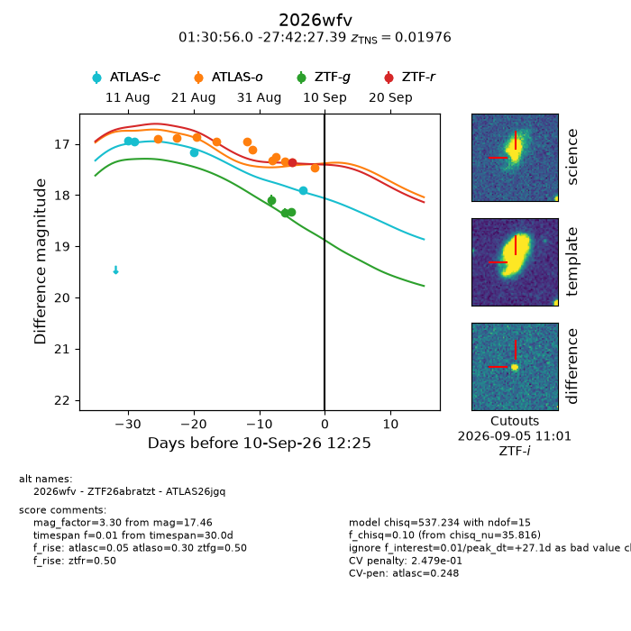
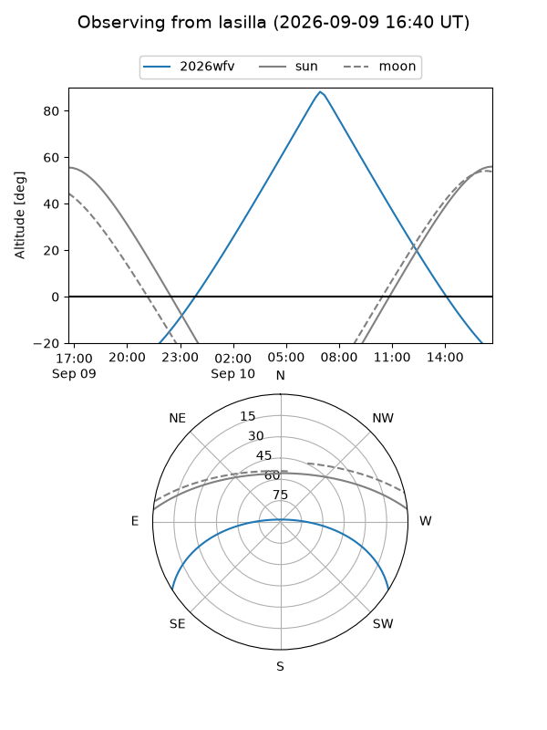
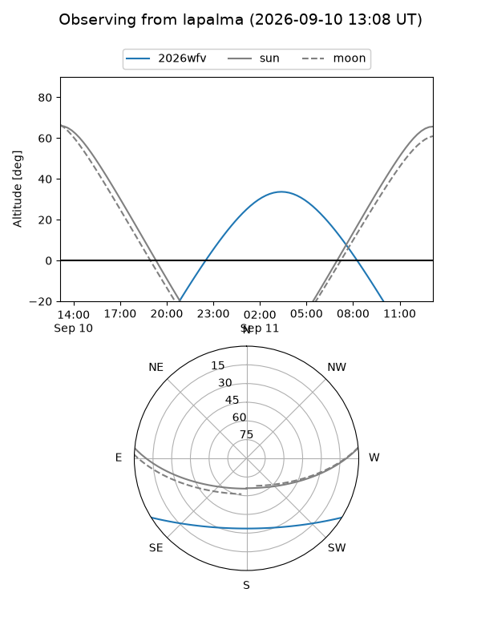
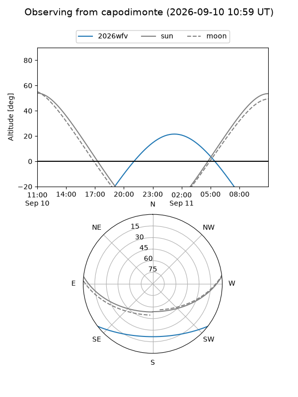
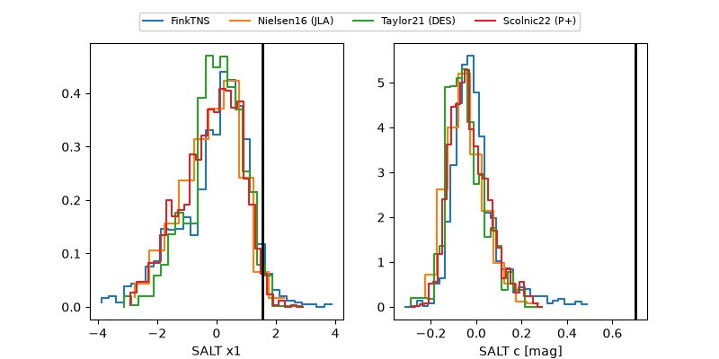

2026wfv
Target 2026wfv at 2026-09-10 12:27
Aliases and brokers:
FINK-ZTF: ztf.fink-portal.org/ZTF26abratzt
Lasair-ZTF: lasair-ztf.lsst.ac.uk/objects/ZTF26abratzt
ALeRCE-ZTF: alerce.online/object/ZTF26abratzt
YSE-PZ: ziggy.ucolick.org/yse/transient_detail/2026wfv
TNS name: wis-tns.org/object/2026wfv
Direct TNS query: direct search
alt names
ZTF26abratzt (ztf,fink_ztf)
2026wfv (tns,yse)
ATLAS26jgq (atlas)
Coordinates:
equatorial (ra, dec) = 22.7334,-27.70761
equatorial (HMS+DMS) = 01:30:56.03,-27:42:27.39
galactic (l, b) = (218.9822,-81.21841)
Flags:
TNS type: SN Ic-BL
TNS redshift: 0.0198
peak dt: +27.1
likely cv: !!
Photometry:
last atlasc=17.90, atlaso=17.46, ztfg=18.33, ztfr=17.36
4 atlasc, 11 atlaso, 3 ztfg, 1 ztfr detections
Lightcurve

Visibility



Additional plots
